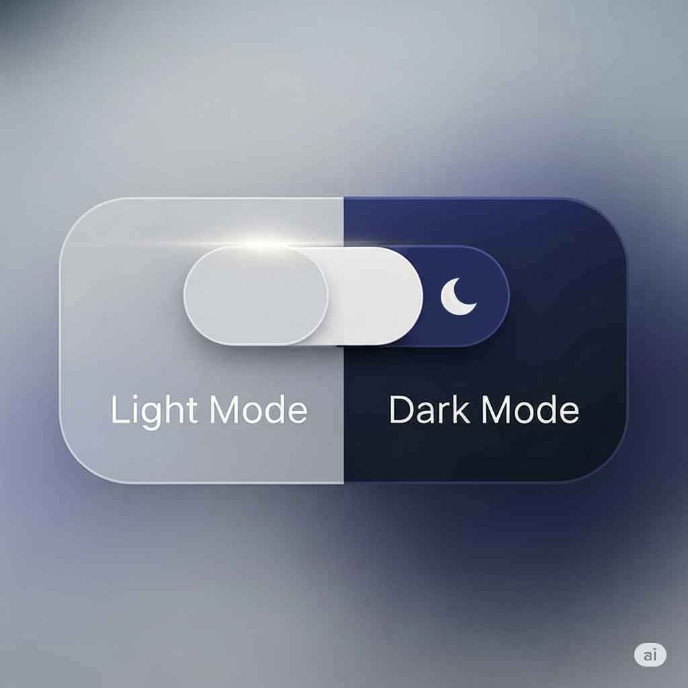

Do Escuro para o Claro: Um Guia Prático para Criar um Seletor de Tema
Publicado em 29 de Junho de 2025 • Leitura de 5 min
Oferecer um tema escuro (dark mode) se tornou quase um padrão em aplicações e sites modernos. Além da preferência estética, ele pode reduzir o cansaço visual em ambientes com pouca luz. Dar ao usuário o poder de escolher entre um tema claro e um escuro não é apenas um detalhe, é um sinal de cuidado com a experiência do usuário (UX).
Passo 1: A Estrutura HTML (O Botão)
Tudo começa com um simples botão no nosso HTML. Dentro dele, vamos colocar dois ícones SVG: um sol (para representar o tema claro) e uma lua (para o tema escuro). Usando JavaScript, vamos alternar qual dos dois está visível.
<!-- Botão de Tema Light/Dark -->
<button id="theme-toggle-button">
<svg id="theme-icon-sun" class="w-6 h-6 hidden">... (código do ícone de sol) ...</svg>
<svg id="theme-icon-moon" class="w-6 h-6">... (código do ícone de lua) ...</svg>
</button>
Passo 2: A Lógica de Estilos com CSS
A estratégia aqui é simples e poderosa. Nosso site, por padrão, é escuro. Vamos criar uma classe especial, que chamaremos de .light-mode. Quando essa classe for adicionada à tag pelo JavaScript, um conjunto de regras CSS será ativado para sobrescrever as cores padrão e aplicar o tema claro.
/* Definimos nossas variáveis de cor para o modo claro */
.light-mode {
--bg-color: #f3f4f6;
--text-color: #1f2937;
--accent-color: #7c3aed;
/* ... etc ... */
}
/* Depois, aplicamos essas variáveis */
.light-mode body {
background-color: var(--bg-color);
color: var(--text-color);
}
.light-mode .project-card {
background-color: #e5e7eb;
}
/* E assim por diante para todos os outros elementos... */
Passo 3: O JavaScript (O Cérebro da Operação)
Agora, vamos para o JavaScript, que vai orquestrar tudo. Nosso script terá três responsabilidades:
- Verificar se o usuário já tem um tema salvo.
- Ouvir o clique no botão para trocar o tema.
- Salvar a nova escolha.
3.1. Salvando a Preferência com localStorage
Para que o site 'lembre' da escolha do usuário na próxima vez que ele visitar, usamos uma ferramenta do navegador chamada localStorage. É como um pequeno bloco de notas onde podemos guardar informações simples, como a string 'light' ou 'dark'.
/**
* Configura o seletor de tema (light/dark mode) e salva a preferência.
*/
function setupThemeToggle() {
const themeToggleButton = document.getElementById('theme-toggle-button');
const sunIcon = document.getElementById('theme-icon-sun');
const moonIcon = document.getElementById('theme-icon-moon');
const root = document.documentElement; // A tag
// Função para aplicar o tema
const applyTheme = (theme) => {
if (theme === 'light') {
root.classList.add('light-mode');
sunIcon.classList.remove('hidden');
moonIcon.classList.add('hidden');
} else {
root.classList.remove('light-mode');
sunIcon.classList.add('hidden');
moonIcon.classList.remove('hidden');
}
// Salva a escolha no localStorage
localStorage.setItem('theme', theme);
};
// Listener para o clique no botão
themeToggleButton.addEventListener('click', () => {
const currentTheme = localStorage.getItem('theme') || 'dark';
const newTheme = currentTheme === 'dark' ? 'light' : 'dark';
applyTheme(newTheme);
});
// Lógica inicial: verifica preferência salva ou do sistema
const savedTheme = localStorage.getItem('theme');
const prefersDark = window.matchMedia('(prefers-color-scheme: dark)').matches;
if (savedTheme) {
applyTheme(savedTheme);
} else if (prefersDark) {
applyTheme('dark');
} else {
applyTheme('light');
}
}
// Não se esqueça de chamar a função quando a página carregar!
document.addEventListener('DOMContentLoaded', setupThemeToggle);
Conclusão
E pronto! Com uma estrutura HTML simples, um CSS bem organizado com variáveis e uma função JavaScript inteligente, criamos um seletor de tema completo, profissional e que melhora significativamente a experiência do usuário.
Este é um ótimo exemplo de como podemos usar o front-end para criar funcionalidades que não são apenas bonitas, mas também úteis e centradas no usuário. Espero que este guia te ajude a implementar essa funcionalidade nos seus próprios projetos!